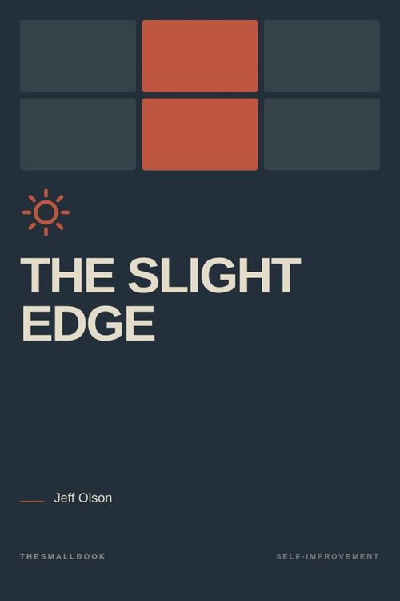

Library › Ask the Library › How do I stay consistent?
How do I stay consistent?
The short answer
Consistency is boring math: small daily reps beat heroic sprints. Track it visibly, never miss twice, and let compounding do the loud work.
The books behind the answer

The Compound Effect
Darren Hardy · 2010 · 8 min · 6 lessons
The magic penny beats the $3 million check. Tiny daily choices, compounded, decide everything - and you're always compounding something.
- Big Mo: Routines, Rhythm, and Consistency: Momentum is built by rhythm, same action, same time, every day.

The Slight Edge
Jeff Olson · 2005 · 8 min · 6 lessons
Success is a curve, not a leap: simple daily disciplines - easy to do, easy to skip - compound into everything or nothing.
- The Seven Slight-Edge Allies: Easy to do, easy not to do. The tiny daily actions are invisible until they're overwhelming.

Atomic Habits
James Clear · 2018 · 11 min · 8 lessons
Getting 1% better every day compounds into a completely different life. Habits are the compound interest of self-improvement.
- Make It Satisfying, Never Miss Twice: One miss is an accident; two is a new habit. The streak is the reward, protect it.

The Psychology of Money
Morgan Housel · 2020 · 11 min · 8 lessons
Doing well with money is a soft skill: how you behave beats what you know. Every time.
- Compounding: Shut Up and Wait: The most important word in money and habits is 'long'. Consistency is just compounding in disguise.
Also asked in Hindi and Hinglish
People also ask this as: roz consistent kaise rahein, kaam roz kaise karein. The answer on this page stays in simple English, and the live book can be read in Hindi or Hinglish.
Questions people ask next
Can I read this in Hindi?
Yes. This answer is written in simple English. Open any linked book and choose Hindi or Hinglish to read the full lessons in your language, with audio where available.